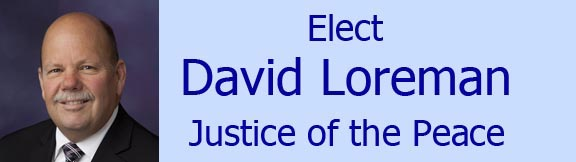
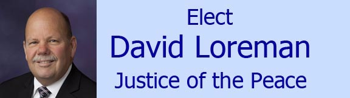

Home | Family | Educational Background | Professional Accomplishments | Community Involvement | Contact

Home | Family | Educational Background | Professional Accomplishments | Community Involvement | Contact
Community Involvement & Recognitions
Since moving to Elko County in 1991, David has been actively involved in many organizations to help enhance the opportunities for both our community and our youth. He has had the opportunity to serve as a long time member of the Elko County Library Board, a leader with the Boy Scouts of America, a Rotarian, and a referee for all Elko County High Schools. Community Positions Held:
|
Community Recognitions: BOY SCOUTS OF AMERICA
|
|
ELKO COUNTY LIBRARY
NORTH EAST NEVADA DEVELOPMENT AUTHORITY (NENDA)
|